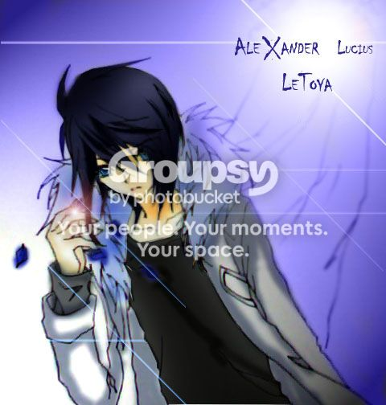

Legendary Of Vampire
ราตรีที่17 คอสเพลย์+รูปอเล็ก

ณ สนามหญ้า หลังหอจันทรายามราตรี ที่ไม่น่าจะมีใครอยู่ บัดนี้กลับมีร่างหนึ่ง นั่งเหม่อมองดวงจันทร์ คล้ายว่าอากาศที่หนาวเหน็บของสายลมยามนี้ จะไม่สะเทือนต่อร่างที่สวมเพียงเสื้อเชิ้ต กับกางเกงยีนส์ เลยแม้เพียงนิดเดียว แม้ว่าในทุกลมหายใจนั้น จะมีไอจางๆก็ตามที
เพราะว่า เคยเป็นคฤหาสของตระกุล เรมิงตัน ตระกุลไวท์โรสเก่า...ที่ขัดคำสั่งองค์ราชินี แล้วคิดก่อกบฏต่อราชวงศ์เลยถูกลงโทษ และยังมีคำทำนายว่า ผู้ที่อยู่ที่หอจันทรา จะทำลายล้างแวมไพร์ มันถึงได้เป็นสถานที่ต้องห้าม
ประโยคเดิมๆ ถูกเล่นย้อนไปมา อยู่ในหัว ก่อนที่หัวสมองสรุปได้ว่า หากคำทำนายเป็นจริง พวกเราที่นี่จะเป็นผู้ทำลายล้างแวมไพร์
“หึ...เรื่องตลกๆพรรนี้ จะเป็นจริงได้ยังไง” กล่าวไปกับสายลม เมื่อในที่นั้นไม่มีใครอื่นนอกจากเขา แม้แต่เจ้าค้างคาวจอมวุ่นก็นั่งฝอยอยู่ในห้องรับแขกกับคนอื่นๆ
+++++++++++++++++
+++++++++++++++++++++++++++
.....บนระเบียงชั้น3ที่เงียบสงบ มีร่างหนึ่งนั่งอย่างไม่กลัวตกอยู่ ดวงตาเหม่อมองไปยังดวงจันทร์ และคิดอะไรไปเรื่อยเปื่อย แต่แล้วก็รู้สึกคล้ายกับมีภาพบางอย่างเข้ามาในสมอง
ความมืดมิด...เสียงลม...ความรู้สึกเปียกชื้นที่มือทั้งสอง และ...กลิ่นคาวของเลือด ที่รุนแรง
ก่อนที่จะสงสัยอะไรมากกว่านั้นเสียงหนึ่งก็ดังขึ้นเสียก่อน
“มันจบลงแล้วล่ะ...ดีใจซะพวกเราเป็นอิสระแล้วตอนนี้ฉัน...มีสิ่งเดียว ที่อยากจะขอเธอ”น้ำเสียงเยือกเย็นที่คุ้นหูดังขึ้น ...ที่นี่? ที่ไหนกันนะ...เสียง...ใครกัน
“อย่าลืมตาขึ้นมาได้ไหม จนกว่า เสียงของฉันจะเลือนหายไป กับสายลมที่พัดผ่าน นี่คงเป็นสิ่งสุดท้ายที่ฉันต้องการ อย่าร้องไห้เลย ขณะที่เธอไม่ได้เห็นหน้าฉัน ตอนนี้เธอได้ยินฉันใช่ไหม?”แม้จะไม่เข้าใจเรื่องราวใดๆ ไม่รู้สาเหตุ แต่ เสียงนั้น กลับสะกดให้เธอ ฟังมันเงียบๆ...ด้วยความรู้สึกที่เรียกว่า...คิดถึง และโหยหา น้ำตาที่เอ่อล้นขึ้นมาที่ตาคู่สวย อย่างที่แม้แต่ตัวเองก็ไม่เข้าใจ...ร้องไห้ ทำไม?
“เธอไม่จำเป็นต้องฟังก็ได้ มันแค่เรื่องไร้สาระ...ไร้สาระ ที่สุด แต่ช่วยหลับตาจนกว่าเสียงฉันจะหายไปเพียงเท่านั้น ฉันน่ะ อยากบอกกับเธอ มานานแสนนานแล้ว เธออาจจะไม่เชื่อ แต่ฉันก็อยากจะบอกไว้ ว่า คำว่ารัก และความห่วงใยที่มีให้เธอเสมอมามันคือของจริง งี่เง่าใช่ไหม ที่เพิ่งมาบอกในวันที่เราจะจากกัน ฉันน่ะ เพียงแค่อยากจะพูดสักครั้งเท่านั้น แม้จะ ดูโง่แค่ไหนก็เถอะ ขอให้เธอจงก้าวเดินต่อไปตามเส้นทางที่เธอนั้นเลือก อย่าได้จมปลักอยู่กับอดีตที่ไร้ตัวตนอย่างฉัน แม้จะไม่มีฉันอยู่ แต่เธอ คือผู้ที่ต้องคงอยู่ ฉันรักเธอนะ และ ถึงแม้ตัวฉันจะอยู่ ณ ที่แห่งใดก็ตาม ความรักของฉัน จะอยู่ที่นี่ ตรงนี้ กับเธอเสมอ .........นะ........”สิ้นเสียงนั้น... หญิงสาวกลับไม่กล้า ลืมตาขึ้นมา...ได้ยิน...เสียงของสายลมที่พัดผ่านร่าง ...เสียงสะอื้นของตัวเอง เสียงของคนคนนั้น หายไปแล้ว....นึกไม่ออก ว่าเสียงนั้น เป็นของใคร แต่มัน...ช่างคุ้นเหลือเกิน...
ดวงตาสวยค่อยๆลืมขึ้นมา...แม้จะมองไม่ชัดนักเหตุเพราะน้ำตาที่คลออยู่เต็มหน่วยตา แต่ภาพที่เห็นรอบตัวนั้น...คือ เลือด...สีแดงฉาน ร่างไร้สติของ อาจารย์ ทหาร...และ นักเรียนหลายคน หอจันทราที่ยับเยิน...สองมือที่เปื้อนเลือดของเธอเอง ...ภาพทั้งหมดนั้นคือ...ความสูญเสีย หลังจากสงครามจบลง...
“มะ...ไม่...ไม่นะ!!”สองมือที่เปื้อนเลือดสั่นอย่างห้ามไม่อยู่ สองขาที่เคยหยัดยืนอย่างมั่นคง ทรุดลงไปบนพื้นที่ซึ่งมีเหลือเพียงซากกุหลาบ อดีตของมันคือ สวนกุหลาบหน้าหอที่เคยสวยงาม...ถูกชโลมไปด้วย เลือด
จำได้แล้ว...เสียงนั้น...เสียงที่ฉันรู้สึกคุ้นเคย เสียงของคนที่ฉัน ... แอบรักข้างเดียว เสียงที่ฉันจำมันได้ขึ้นใจ ทั้งที่มัน...ไม่ได้มีให้ฟังบ่อยนัก แต่...เขาจากไปแล้ว
“..........ฮึก..นายอยู่ไหน”
ทำไมกัน คนเรามักจะเห็นความสำคัญของสิ่งหนึ่ง ในเวลาที่สายเกินไป
ทำไมกัน สิ่งที่เรารัก มักจะจากเราไปเสมอๆ แม้ตัวเราจะฉุดรั้งไว้แค่ไหน
ทำไมกัน ตัวเรานั้น จึงอ่อนแอนัก ไม่สามารถครอบครองสิ่งที่รักไว้ได้เลยสักครั้ง
ภาพต่างๆ คล้ายจะค่อยๆหายไป มีเพียงความมืดมิดและไร้เสียงใด ก่อนที่จะ....
//เฮือก!!//
สะดุ้งน้อยๆเมื่อ ใบไม้ใบหนึ่ง ปลิวมาชนกับใบหน้า สงสัยกับภาพที่เห็นเมื่อกี้ ...แต่ก็คิดว่าคงจะเผลอหลับไปสินะ...ฝัน...ฝันแน่ๆ ฝันบ้าๆ
ถอนหายใจแรงๆ ก่อนจะเดินกลับเข้ามาในห้องมืดๆ ล้มตัวนอนบนเตียงของตัวเอง เสมองไปยังเตียงของรูมเมท ที่ไร้ซึ่งร่างเจ้าของ ยังไม่กลับมาสินะ... ไปอยู่ที่ไหนกันแน่นะ...
+++++++++
+++++++++++++++++++++
“เฮ้ยๆ...มิคาเอล อย่านะ”เสียงของ ชายหนุ่มผมดำ ซึ่งเป็นรุ่นพี่ร้องห้ามเมื่อเจ้าของชื่อ ก้าวเข้ามาหาก่อนจะหัวเราะชวนเสียวสันหลัง
“หึหึหึ...ฮิเดะคุง~ อย่าหนีสิ น่าๆ แค่นิดเดียวเองนา...”เจ้าของเรือนผมสีหิมะที่...เอ่อ...แปลงร่างเป็นอินุยาฉะ...ในมือถือชุดพ่อบ้าน...กำลังเดิน(หรือวิ่ง) ไล่ล่าผู้ที่กำลังพยายามจะหนีอย่างดุเดือด
“ไม่เอาเว้ยครับ!! ปล่อยฉันไปเถอะ!!”บอกตรงๆรับไม่ได้จริงๆ เมื่อเห็นสภาพ(?) ของหลายๆคนในที่นี้ที่ตกเป็นเหยื่อคอสเพลย์ของ ไอ้บ้าที่กำลังไล่ล่าเขาอยู่!!!
“ฮิเดะคุง ยอมๆไปเหอะ...ยังไงก็ไม่รอดหรอก” ชายผมขาวอีกคนที่นั่งท้าวคางมองอยู่ตรงโซฟาด้วยสภาพ...คิรัว =[]=!!!~ กล่าวแบบหน่ายๆ โอ้ฮารุฮิ แม้แต่โรเว่นก็ไม่รอดเรอะ!!!
“น่านะ...ฮิเดะคุงงงง ถ้างั้น คิรามะ จับมาเด๊ะ!!”เอ่ยปากสั่งชายหนุ่มผมแดงซึ่งเอ่อ... อยู่ในชุดเอ็กโซซิส ตาข้างซ้ายถูกผ้าคาดตาปิดไว้และ ใส่ผ้าพันคอ...นะ...นี่มัน ราวี่!!!
สิ้นเสียงสั่ง ผู้ถูกสั่งที่ไม่มีทางเลือก ก็จัดการรวบตัว พี่ชายของว่าที่ภรรยาในอนาคต(?) ไว้ในทันที
“ขอโทษนะครับ แต่คุณพี่ยอมๆไปก่อนดีกว่านะครับ แปบเดียวเอง”ถึงแม้จะลำบากใจก็เถอะนะ แต่มันจำเป็น ขอโทษคร้าบบบบบบบบบ
“ม่ายยยยยยย ~ ~ TT[]TT!!!”
5 นาทีผ่านไป
แม้แต่คุณพี่ ก็ยังถูกจับแปลงกายเป็น คุณพ่อบ้านเซบาสเตียน แบล็ค บัทเลอร์ ไปเรียบร้อย อินุยาฉะ(?) เริ่มนับจำนวนสมาชิกและวางแผนไปจับตัวสมาชิกหอที่เหลือมาเป็นของเล่น...เอ๊ย...มาแปลงโฉม
“ทำอะไรกันอยู่น่ะ”สองสาวที่เดินลงมาที่ห้องนั่งเล่นอย่างผิดจังหวะ ถามขึ้นเมื่อเห็นสภาพแต่ละคน...ซึ่ง ดูปกติกันมากๆ
“พอดีเลย ได้รินารี่ กับ เฮอร์ไมโอนี่ แล้วสิ...คึคึคึคึ”มิคาเอล ยิ้มกริ่ม ก่อนจะคว้าชุด2ชุด ส่งให้สองสาว ด้วยรอยยิ้ม
“หะ...อะไรเหรอ” หญิงสาวผมทองถามขึ้นอย่าง งงๆ ท่ามกลางสายตาปลงของ ผู้ที่ตกเป็นเหยื่อไปแล้ว
“แหม เอมี่จัง กับ โอริฮิเมะจัง ก็ คอสเพลย์ไงล่ะ อ้อ ถ้าใส่ชุดพวกนี้ล่ะก็ฮิเดะคุงกับคิระคุงต้องชอบแน่ๆเลยนา~” แอบกระซิบให้สองสาวหน้าแดงเล่นๆ สาวน้อยผมดำเหล่มองราวี่(?) นิดหนึ่งก่อนจะดึงชุดมาแล้วก็เข้าไปเปลี่ยนเงียบๆ ส่วนอีกคนก็บิดซักสองตลบแล้วคว้าชุดวิ่งเข้าไปเปลี่ยนอีกคน เข้าทางล่ะ หึหึ
“เอาล่ะต่อไปก็เจ้านั่น...หึหึ เคนจิ วันนี้นายต้องเป็นของเล่นของฉัน!!” ว่าพลางหัวเราะอย่างบ้าคลั่งหยิบชุดบางอย่างติดมือไปด้วย แล้ววิ่งลันล้าขึ้นไปที่ชั้น2 เป้าหมายคือ ห้องของคู่ปรับตัวฉกาจ ที่ทำสนธิสัญญาสงบศึกกันไปแล้วเมื่อไม่นานมานี้ แต่...มันก็ยังแค้นอยู่ดีล่ะน่า
+++++++
+++++++++++++
“ฮัดเช้ย!!”
“เง้ยยยย...เป็นหวัดรึเปล่าน่ะ” หญิงสาวเอ่ยถามรูมเมทของตนเองที่อยู่ๆก็จามอย่างแรง
“ไม่รู้…สงสัยจะมีหมานินทา”พูดไม่ทันขาดคำ ก็ได้ยินเสียง ใครซักคนมาเคาะประตู (หมาที่ว่ามันมาเคาะละ : คนแต่ง)
//ก๊อกๆๆ//
“อืมๆ...จะเปิดเดี๋ยวนี้แหละ”ส่งเสียงตอบรับ ก่อนจะวางหนังสือเล่มโปรด เดินไปเปิดประตูก็พบกับ.....
“ฮายยยย~ ไง”ยิ้มกว้างงงงง แบบที่ไม่เคยมีให้กันมาก่อน ด้วยสภาพ อินุยาฉะ
“แก...สมองกระทบกระเทือนอะไรรึเปล่า?”เหวอนิดหน่อย อยู่ๆเจอแบบนี้มันก็ตั้งรับไม่ทันเหมือนกันนะ คู่ปรับที่ทั้งกัดทั้งฟัดกันตั้งแต่วันปฐมนิเทศ วันนี้มัน...
“เปล่านี่”
“แล้วแก...ใส่ชุดบ้าๆนี่เดินไปเดินมา เที่ยวเคาะประตูห้องคนอื่นเค้าทำไม?”ผู้ที่ถูกกล่าวหาทำหน้าหงิก ก่อนจะชูชุดในมือให้อีกฝ่ายดู
“คำสั่งของ ป้า...เอ๊ย อ.จ อีฟ นายก็ต้องใส่ด้วย นี่ของนาย นี่..ของรูมเมทนาย เสร็จแล้วก็ ลงไปที่ห้องนั่งเล่น ไปล่ะ”ส่งของเสร็จ กระทำการอ้างเรียบร้อย ก็วิ่งเลยไปที่อีกห้องที่อยู่ใกล้ๆ
//ก๊อกๆ// เคาะประตูตามมารยาทซักสองที ก่อนจะรอคนมาเปิด
“ครับ?”ชายหนุ่มผมสีน้ำตาลไหม้ เดินมาเปิดประตูและทำหน้างงเล็กน้อยเมื่อเห็นสภาพคนเคาะ ที่เค้าจำได้ว่ามันเป็นตัวอะไรซักอย่างที่เคยดูทางทีวี
“โย่ว~ ..แนชคุง ใช่มะ?”ด้วยความที่จำชื่อคนตรงหน้าไม่ค่อยได้ จึงถามลองเชิงสักนิด
“อื้อ ใช่ อ่อ...เพื่อนหลันฮัวรึเปล่า? อยู่ในห้องน่ะ เรียกให้มั้ย”พูดรัวเป็นปืนกลจบทำท่าจะเดินกลับเข้าไปแต่ ถูกดึงไว้ก่อน
“เดี๋ยววววว มีธุระกับนายด้วยน่ะแหละ นี่ชุดของนาย และนี่ ของหลันฮัวนะ”อีกฝ่ายรับไปอย่าง งง ๆ ยังไม่ทันได้ถามอะไรมิคาเอลก็อธิบายซะก่อน
“คอสเพลย์น่ะ คอสเพลย์ รู้จักใช่มั้ย?...อ.จ อีฟ สั่งมาน่ะ แต่งเสร็จแล้วก็ลงไปที่ห้องนั่งเล่นนะ ไปก่อนล่ะ”
“ดะ...เดี๋ยว”
//ปัง// ยังไม่ทันพูดอะไร ผู้มาเยือนก็ปิดประตูให้แล้วจากไปซะแล้ว
TBC
ช่วงนี้อาจหายนานนิสนะ ขอบคุณที่ช่วยออกทะเล(กร๊ากกกก)
ขอบคณที่ช่วยขุดค้าบ มิสๆๆ ค้าบบบบ TT^TT /~
รายชื่อสมาชิกที่ยังรอด (และที่มิคาเอลกำลังตามล่าค้นทั้งหอ)
ซีโร่ / ซัตสึกิ / ยูเรโกะ / อเล็ก
ตอนหน้าจะมีผู้ที่เป็นปริศนา (และหายหัวไปนานอย่างน่าสงสัย) โผล่มาล่ะ


 ทำได้เยี่ยมมัก
ทำได้เยี่ยมมัก 


 ตอนใหม่มาแล้ว... แถมยังแต่ง คอรสเพลย์กันอีก
ตอนใหม่มาแล้ว... แถมยังแต่ง คอรสเพลย์กันอีก